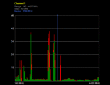
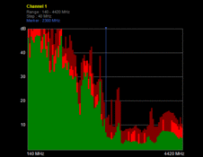

")

Frequently Asked Questions
- Question: What are your recommendations for preparing the CAYMAN device for operation and checking its workability?
- Answer: After receiving the device, following steps must be made. Check if the device is cold. If it is cold, leave it in a room with room temperature for a while. Check the battery charge, place the batteries in to the battery charger and charge the accumulator batteries until 100%. To check the workability of the device and detection capability, turn on the device and press square (middle button on the control handle)button for automatic sensitivity adjustment(adaptation mode). The full process is described in the manual of the device in paragraph 2.2 . And then follow the steps described in the manual 2.3 paragraph.
- Question: What are Your recommendations for checking if the device ST-500 Piranha or ST-301 Spider works correctly in LFA mode?
- Answer: Connect the (close circuit) connector to the cable on one end and the device on the other. Afterwards switch in to LFA mode, then supply bias voltage with 0 GAIN to the line and check all wires. The response from the line should be with the same voltage supplied by the device. Meaning that the device works correctly. If You have any more questions, do not hesitate to contact our technical team at This email address is being protected from spambots. You need JavaScript enabled to view it..
- Question: What is the advantage and unique feature of the hand held metal detector Vortex-RD?
- Answer: The main advantage of the hand held metal detector Vortex-RD is that it can detect metallic objects and radioactivity at the same time. In addition, it is easy to use, with a push of a button ON, device can be used immediately. The unique feature of the device is a built-in scintillator, capable of immediate radioactivity detection.
- Answer: The differences between these two models are vibration indication and adjustable detection sensitivity of Vortex-S. On the other hand device Vortex does not require any sensitivity adjustment.
- What types of cables can be checked with ST-301 Spider Wire Line Analyzer?
- Answer: Any type of wireline such as LAN cables, mains 220V, coaxial cables, etc. can be checked, except fiber optics.
- Question: I am very interested in what is your best product for finding hidden cameras? What can you recommend and why?
- Answer: A huge variety of devices for conducting covert surveillance, presented on the market today, and their availability led to the fact that they were used everywhere. Today, video cameras have compact size, their performance is constantly improving. In addition, there were wireless models with remote control, which allows you to install them in electrical appliances, home appliances, furniture, and even clothing. For this reason, the hidden camera detector is necessary not only for business owners and security personnel, but also for ordinary people.
Varieties of detectors
Currently, you can buy detectors of bugs and hidden cameras that perform searches in various ways.
Optical finder
The work of optical detectors is carried out on the principle of re-reflection. The device operates according to the following algorithm. Like other optical technology, hidden cameras are equipped with a light-sensitive element. When hit by it, the laser beams are reflected from the element and at this time it catches the detector hidden cameras. But the device registers the glare of all objects in sight of the detector. Built-in filters provide information selection.
Electromagnetic detector
This device for detection of hidden video surveillance scans the electromagnetic field inside the room and compares the found electrical frequencies with those that are recorded in the database of frequencies of cameras. Today, most of the cameras work on the basis of the matrix, which is an integrated chip with photosensitive photodiodes in the composition. With its help, an electric charge is generated, which falls on the processor, where the signal is formed. The processor is equipped with an oscillator designed to emit electromagnetic waves at a given frequency. On them, the device finds hidden bugs and cameras.
Up today, the most common types of video cameras are listed below:
- Wireline
- Cameras with radio channel for data transmission
- having built-in memory
Depending on the operational situation, you can use either an Optical video camera detector or an electromagnetic hidden video camera detector. For detection of cameras that has radio channel for data transmission, HF detector ST-500 Piranha is used.
- Question: Does any of your products have any Export restrictions?
- Answer: Products that we sell dont have any export restrictions! Our products are not designed to be used in any segment of military purposes; our equipment is designed for data leakage channel detection. Furthermore, our company business conception is focused only on countersurveillance and information protection.
Overall, JSC Selcom Security is operating for a long time and cooperating with many countries from all over the world, and we didnt face any issues or had any claims from customs.
- Question: What is the detection distance of radio microphones using SEL SP-71R "Raksa" ?
-
Answer: The detection distance, depends on the output power of the transmitter. Which can vary from single mW up to hundreds of mW. The actual detection range of radio microphones is defined by the output power of the transmitter of the radio microphone and intensity of the EM field against interferences in places of reception.
- Question: I am interested, how does CHANNEL 2 of the device ST-031M "Piranha" work? Where can I receive a qualified answer?
-
Answer: Please read the publication "Testing the capabilities of ST-031M Piranha part2 " or send us an e-mail to This email address is being protected from spambots. You need JavaScript enabled to view it.
- Question: How to adjust the rotary switch of ST-403 CAYMAN?
-
Answer: Please see the instruction in the video below:
https://www.youtube.com/watch?v=WiZBo-pbS6M&feature=youtu.be
- Question: What is the sphere of use of a radio noise generator Shtora-4?
- Answer: The best defense against low power eavesdropping devices transmitting information through radio and blocking Remote control activation as well as TEMPEST is a Generator of radio noise Shtora-4. The operation principle of the device is based on creating a powerful radio interference from 0,01MHZ to 2500 MHz. On the picture You can see how it looks:
 
Channel of data leakage radio channel Protected radio channel
- Question: When making the special negotiations room, we encountered a problem of placement of transducers on walls. How to properly place them?
-
Answer: Installing of vibro transducers: All vibro transducers must be installed on the proper mounts provided by the vendor. It must be taken into consideration that before conducting such operation, the client must inform how many mounts and what kind, he needs.For walls- special nails
For windows- discs
For heater- special holder
Constructively every channel has 2 parallel connections. That creates a single channel load.
One channel can hold out up to 32 vibro transducers.
- Question: Can I use the acoustic emitter of SEL SP-157 for protection of false ceilings.
-
Answer: Yes, the SEL SP-157AS can be used for protection of false ceilings, air shafts and ventilation systems.
- Question: When we place and hold our finger on the device RECARDER the contact group, the LED indicator will flash, but sometimes not. How to fix this problem?
-
Answer: If no LED indicators turn on, it can mean this:
- 1) LED indication is disabled in Recorder settings menu.
- 2) If the VAS is enabled, chosen acoustic level is not enough to start the recording.
-
3) The device is out-of-service or its battery is fully discharged.
-
4) Timer recording mode is activated.
- Question: Is there a way to check if the professional audio recorder RECARDER is on or off?
-
Answer: To check current operation mode of the device, press and hold a finger on the contact group. If the LED flashes in intervals then the device is recording. If the LED is on constantly and not flashing then the device is ready to start working.
- Question: At what frequencies does ST-202 UDAV-M operate?
- Answer: The selective cellular jammer ST-202 UDAV-M operates at following frequencies: GSM-900 (925 960), GSM 1800 + DECT (1805 1900), 3G-1 (2010-2025), 3G-2 (2110 2170), Wf/BT (2400 2484), 4G (2500-2700), CDMA 450 (463-468), LTE 800 (832-862).
-
Question: How long does it take for SEL SP-71R "Raksa" to detect a surveillance device?
- Answer: Depends on the experience of the operator. Scanning and analyzing cycle period is 1.0 1.5 sec. And filtration of short term noise requires at least 2-3 sec.
- Question: What digital standards does your SEL SP-71R "Raksa" detect?
- Answer: Currently SEL SP-71R "Raksa" can detect following standards: GSM850/ 900E/ 1800/ 1900, UMTS 850/900/1800/1900/ 2100, CDMA 450 (A-H)/800/1900. Also cordless DECT telephones, Bluetooth and Wi-Fi devices.
-
Question: Can RECARDER be activated by voice? F.E: when someone starts speaking.
- Answer: Professional Audio recorder RECARDER has built in Voice Activation system, which can be adjusted in the setup menu of the software.
- Question: Can the quality of the recording for the device RECARDER be regulated?
- Answer: The audio can be recorded in three different qualities: 8kHz/ 16kHz /24kHz
8 kHz 36/144 hrs
16 kHz 18/72 hrs
24 kHz 12/48 hrs
-
Question: What is the battery life of the Professional Audio Recorder RECARDER ?
- Answer: The battery life of RECARDER is up to 24 hours in record mode and up to 1500 hours in standby mode.
-
Question: Are there any labels on the RECARDER, or it comes simply in white?
- Answer: The device RECARDER is produced without any labels or signs (white). The client puts his own label, on his own sole discretion.
- Question: Please advise, what are the differences between non-linear junction detectors "ST-402 "Cayman", "atran-Lux", "NR-900 EMS".
- Answer: NLJD "NR-900 EMS" is an impulse emission type NLJD, with the output power not less than 150 W, detector "Katran-Lux" is a continuous emission type NLJD, With the output not less than 1,5Wt. "ST-402 Cayman on the other hand is a principally new NLJD, that emits several frequencies at the same time, 2-3GHz frequency range and the output power of such device is only 2Wt. Impulse type NLJD has a high piercing ability, are less comfortable for detection of corrosional diodes. Impulse NLJD are most effective in empty premises, continuous NLJDs can be used due to its output power corrections can be used near electronic appliances. NLJD "atran-Lux" has automatic setup function (in its working diapason) to the frequency, on the second harmonica which has minimum interferences., which is very important when working in cities with developed systems of cell phone networks of diapasons 900/1800 MHz.
- Question: What is better for protection of the power mains: noise generators or network filters?
- Answer: Network interference suppressing filters e.g., FSP-1F-7A provides lowering the levels in working diapason from 0,1 1000 MHz not less than for 60 Db and protects not only from information but also protects means of office equipment from outside interferences. But for effective work it is necessary to have a grounding system (but not zeroing), where their absence significantly lowers the effectiveness. So in most situations it is more reasonable to use noise generators, for example: SEL SP-44, which does not need grounding and enabling suppression of non-sanctioned information gathering devices.
- Question: Hello, please share, what do the categories mean (different from each other) of the marked premises when testing objects of informatization.
- Answer: Marked Premises (MP) are premises (offices, concert halls, conference rooms and so on.), specially designed for holding closed events (office meetings, discussions, conferences, and negotiations and so on.) regarding questions, that are classified as government secrets, also premises that are equipped with government links or other types of special equipment. The category of marked premises is set according to the secrecy and exploitation for these premises.
The premises of the First category- are premises, specially designed for holding meetings with high priority or secrecy, also companies, firms, and facilities where such questions can be negotiated.
The premises of the second category- are premises, specially designed for holding meetings of high priority and at which top Secret information is being shared.also cabinets of institution governing offices, and its main subsections in which such questions can be discussed and Secret information can be shared.
The premises of the third category- are special premises and Office rooms of the subsections of the facility, in which negotiations and discussions where Secret information is being shared , are being held. Also conference rooms which hold mass meetings and which sometimes hold closed event.
- Question: Please help, in my car SEL SP-71R "Raksa" gives out Analog 30-40-50 and more db. Can a tracking device, radio microphone or a bug be concealed in a car?
- Answer: Such a situation is possible when there is a wireless video camera (e.g. back-view camera). Mainly, it is necessary to switch the search indicator to SEARCH MODE and move it inside and outside of the car, to find the place, where the level of signal be at maximum. The possible source of the signal can be any radio transmitting device, as well as, so called "Bug".
- Question: Hello I have a technical question regarding SEL SP-71R "Raksa" what is the scanning length of Wi-Fi Bluetooth and 2400MHz protocols, and what is displayed if we scan Wi-Fi frequency or 2400 MHz.
- Answer: The detection range depends from reception conditions and type of device wi-fi and Bluetooth, depending from class, work with different output power. Typical range for Bluetooth 1-3m. For Wi-Fi 2-10 m. If the Exchange protocol is identified, then on the SEL SP-71R "Raksa" display usually this type is shown (wi-fi or Bluetooth). If not identified then only diapason is shown as 2.4 GHz
- Question: Please tell, how to find a Digital bug" in a car using SEL SP-71R "Raksa". When measuring levels we often see fluctuations, that is, in the same place every 3-4 seconds at completely different levels. Detection places are the same- 3 spots. Should we draw a map and according to it we should calculate, on the basis of the parabolic emission?
- Answer: First, make sure that the source of radio emission is in the car, and not outside of it(the signals of stationary sources such as Wi-Fi hotspots, radio modems, base stations of mobile networks, and others). The correct thing to do is to conduct investigation at a different location of the car, better further from base digital stations. For example outside town. If the same signals in the same place are present, then possibly there is a bug in the car. That means that in the described situation there could be a presence of a bug- it can give out different signal levels.
- Question: Our company successfully used ST-031M "Piranha" for 2 years. As a result of wrong operators activity, audio input was broken. Can we repair the device by our self?
- Answer: Yes, it is possible to repair this kind of malfunction locally. Please see a video prepared for you, which describes the process of repair of this kind of malfunction. Video here.
- Question: Our company successfully used Lornet-0836 for 3 years. As a result of physical damage to the unit broke. Can this device be fixed? View photo.
- Answer: Yes, Selcom Security JSC is also a technical center that provides post-warranty technical services, and in some cases, we carry out repair of the equipment, which was purchased in other companies. Please send your device over for defectation, repair, readjustment.
- Question: When we select the "Wireless Comm" screen on our ST-031M, we don't see anything...We want to re-install the firmware.. But we haven't got it...Can you send us the file for the 1.3 firmware?
- Answer: Recently we have updated our SOFTWARE section. You can find all the necessary software there
- Question: What is the purpose of ST-402 CAYMAN ?
- Answer: ST-402 CAYMAN is designed for detection and identification of devices of unsanctioned information leakage hidden in walls, furniture, etc., also, due to its low output power (2W) , it can be used to check people.
- Question: What does the NLJD consist of?
- Answer: The structure of the nonlinear junction detector (NLJD) consists of: transmitter, receiver, transmitter-receiver antenna system, the display device.
- Question: Do you provide warranty for your products?
- Answer: Yes, we provide warranty for all our products, which we sell.
- Question: Do you provide post-warranty technical service?
- Answer: Yes, our company provides post-warranty service for the equipment that was purchased from us. In some cases, we carry out repair of the equipment, which was purchased in other companies.
- Question: How do you secretly protect premises from audio recorders?
- Answer: We would like to present New device SEL-324A Speaker- Ceiling ultrasonic microphone jammer. It comes in the look of a speaker that can be mounted in ceiling or another solid structure.